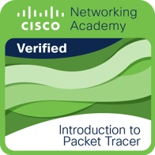
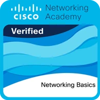
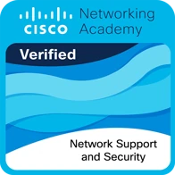
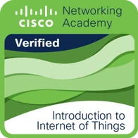
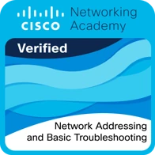
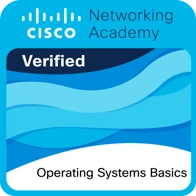
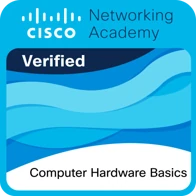

My qualifications and licences
I’m Leighton Hepworth. My background brings together computing, teaching, vocational assessment and hands-on engineering. You can check each Cisco award on my public Credly record.
Cisco learning credentials
Cisco issued these 24 digital learning badges in February and March 2024. Two recognise completion of a career pathway.
All 24 Cisco badges
Choose a subject. Each badge links to its individual award, with the issuer, date and earning criteria.
Cybersecurity 6 badges
Networking & infrastructure 9 badges

Introduction to Packet Tracer- Network Technician Career Path
- Networking Devices and Initial Configuration

Networking Basics
Network Support and Security
Introduction to IoT
Network Addressing and Basic Troubleshooting
Operating Systems Basics
Computer Hardware Basics
Data & analytics 3 badges
Business 4 badges
Communication 2 badges
Qualifications and licences
I’ve used my teaching and assessment qualifications to support apprentices and explain technical work in plain English.
Teaching and assessment
- City & Guilds Level 3 Award in Education and Training (AET)
- VTCT Level 3 Certificate in Assessing Vocational Achievement (TAQA)
Engineering and general qualifications
- City & Guilds Level 2 NVQ in Railway Engineering
- Level 2 Functional Skills in English and Mathematics
- Level 1 Community Volunteering
Licence
Full UK driving licence.
Current study
Part-time undergraduate study with The Open University, including computing modules in Java, web technologies and IT service management.
Earlier trade qualifications and safety cards
My earlier training included groundworks and Level 2 NVQ plant operations for a tracked 360-degree excavator (10 tonnes and above), dumper and roller. I also earned welding certificates in MIG/MAG, MMA, TIG and oxy-acetylene work.
My former PTS, CSCS, CPCS, Lookout and Site Warden cards have expired.